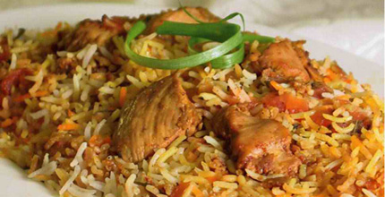
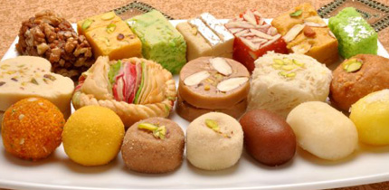
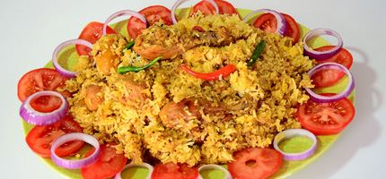

Food
Entrees
Bengali cuisine is filled with some of the most delicious entrees in the world. Primarily based upon meat, fish and lentils served over rice, these entrees are known their subtle (yet fiery) flavors. Pulao (rice cooked in seasoned broth) and Chicken Biryani (chicken meat cooked with pulao) are some of most iconic dishes. There are, also, several types of curries made of meat, fish and vegetables.
Desserts
Desserts occupy an important place in Bengali cuisine. Doi (yogurt), both sweetened and unsweetened, is eaten in most Bengali households. In addition, Mishti (sweets made of sweetened cottage cheese) is eaten by all Bengalis during daily meals and during festivities. Over the years, confectionaries have invented hundreds of varities of sweets, such as the Rossogolla and the Shondesh.
Favorite Recipe
Chicken Biryani
Chicken Biryani is one of the most iconic Bengali dishes. High quality aromatic rice is cooked with chicken to create a great variety of flavors that is sure to leave your mouth watering.
Ingredients
| Items | Measurements | |
|---|---|---|
| Cinnamon Stick | 2 | Small |
| Coriander Seeds | 1 tsp | Whole |
| Nutmeg | 1 | |
| Black Pepper | 1/2 tsp | Whole |
| Cloves | 4 | Whole |
| Basmati Rice | 2 cups | |
| Bay Leaf | 1 | |
| Salt | N/A | According to taste |
| Chicken | 1 | Washed and cut into pieces |
| Red Chili Paste | 1 tsp | |
| Onions | 3 | Finely chopped |
| Potatoes | 3 | Peeled and cut into large pieces |
| Oil | N/A | According to cooking needs |
| Eggs | 2-3 | Boiled |
Directions
- Dry roast 1 cinnamon stick, the corriander seeds, the nutmeg, the black pepper and the clove on a pan. Grind all the dry roasted spices with a mixer until there is a fine texture.
- Marinate the chicken pieces with the spice mixture and red chilli paste. Store the marinated chicken in a freeze for about an hour.
- Wash the Basmati rice and soak it in water for 30 minutes.
- Boil 5 cups of water with the rice, the bay leaf and salt.
- Take the rice out of the water when it is almost done.
- Heat oil in a pan and semi-fry the potatoes after marinating them in salt.
- Heat oil in another pan and fry the onions until they are golden. Add the chicken pieces to it.
- Stir and fry the chicken in medium flame for 15 minutes. Cover the pan and cook for another 15 minutes.
- Take a big deep pan and add half of the rice to it as a 1st layer.
- Add the cooked chicken, boiled eggs and the potatoes as a 2nd layer.
- Add the rest of the rice as a 3rd layer.
- Close the pan with a lid and cook it for 15 minutes over low hit.
- Garnish with fried onions.